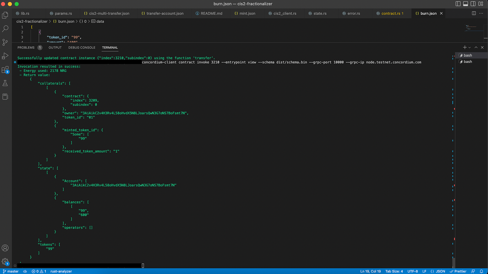
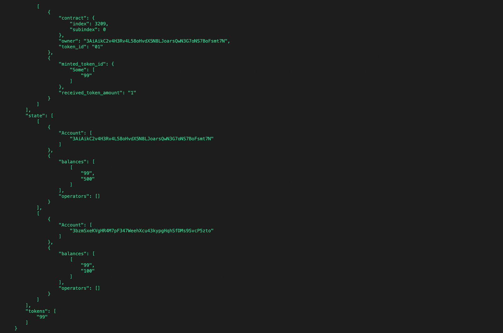
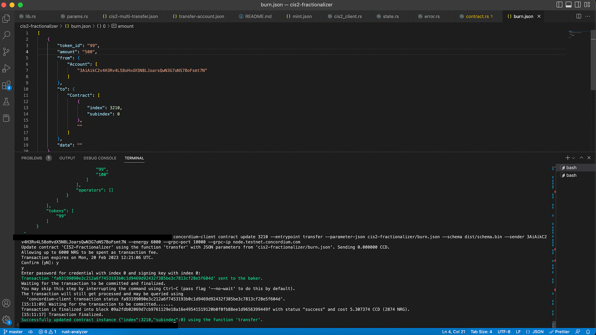
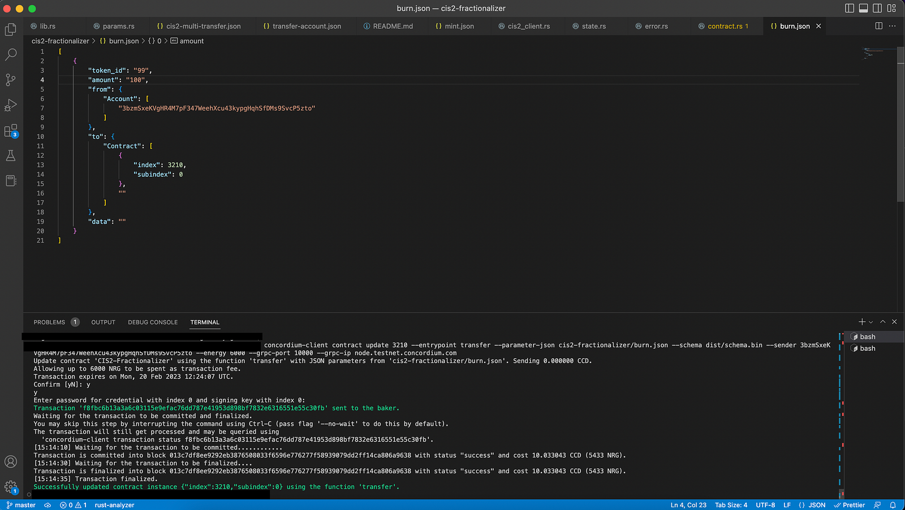
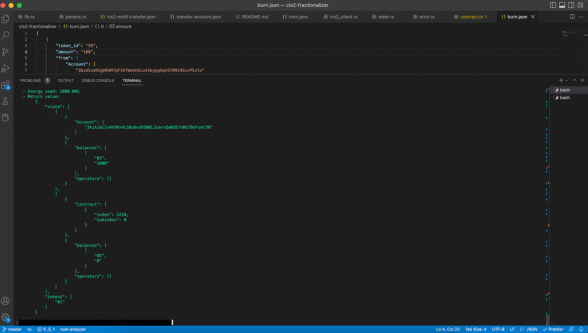

Burn and unlock fractionalized NFTs#
Unlock NFT#
As the final step of this tutorial, you will unlock the token by burning the fractions. Basically, you designed the transfer function slightly different than regular cis-2 multi contract. It checks if a token is transferring to back the same contract, which indicates that the user wants to burn it.
You have 1000 tokens in the state, all of them owned by you: In order to test it properly, you will first burn 400 of them, transfer some of them to another account, and then burn the rest from both accounts. Finally, you will check the state.
In order to transfer it, first create a JSON file with parameters like below.
[
{
"token_id": "<FRACTION-ID>",
"amount": "<AMOUNT-TO-BURN>",
"from": {
"Account": [
"<YOUR-ADDRES>"
]
},
"to": {
"Contract": [
{
"index": <FRACTIONALIZER-CONTRACT-INDEX>,
"subindex": 0
},
""
]
},
"data": ""
}
]
Run the command below after the necessary changes in the parameter JSON.
concordium-client contract update <YOUR-CONTRACT-INSTANCE> --entrypoint transfer --parameter-json cis2-fractionalizer/burn-20.json --schema dist/schema.bin --sender <YOUR-ADDRESS> --energy 6000 --grpc-port 10000 --grpc-ip node.testnet.concordium.com
As usual, after a change, check the state.
Unsurprisingly, you have successfully burned 400 fractions and the account has 600 left.
Transfer to another person#
Now test this a bit deeper by transferring some of it to an actual account. You could either modify the cis2-multi-transfer.json file or create one like below. Call it transfer-account.json and transfer 100 fractions to the second account.
[
{
"token_id": "<FRACTION-ID>",
"amount": "<AMOUNT-TO-BURN>",
"from": {
"Account": [
"<YOUR-ADDRESS-FROM>"
]
},
"to": {
"Account": [
"<YOUR-ADDRESS-TO>"
]
},
"data": ""
}
]
Run the transfer command below.
concordium-client contract update <YOUR-CONTRACT-INSTANCE> --entrypoint transfer --parameter-json cis2-fractionalizer/transfer-account.json --schema dist/schema.bin --sender <YOUR-ADDRESS> --energy 6000 --grpc-port 10000 --grpc-ip node.testnet.concordium.com
Check the state again. You should see two owners with balances 500 and 100.
Nice. Both of the accounts have some assets now. As a final step, burn all of these from them and check both the fractionalizer’s state and the collateralized token’s state.
First, burn 500 from the first account. View the state if you want to double-check it.
Now burn the remaining 100 from the second account. The expected behavior is to be able to unlock the first asset, meaning in the token’s state you should see your account has it.
Don’t forget to invoke the function from the second account as it is the owner of the assets.
As the final step, check the token contract state. In the previous steps, you saw that the account has 999 and the fractionalizer contract has 1. But the smart contract is designed to transfer the token back when all of them are burned. So there should be 1000 in the primary account intact.
By looking at the state, you can confirm that the primary account received that token back and the fractionalizer contract has zero balance. Congratulations you have successfully completed this tutorial!
 Copyright 2021 - 2023, Concordium Software ApS
Copyright 2021 - 2023, Concordium Software ApS